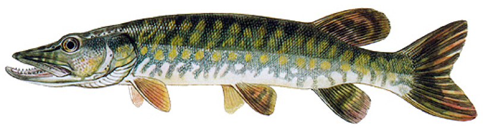

Štika obecná
Štika obecná je dravá ryba z čeledi štikovitých. Patří mezi nejznámější sladkovodní dravce Evropy. Je hojně vyhledávána sportovními rybáři, v České republice je tato ryba hájená od 1. ledna do 15. června a její minimální lovná délka činí 50 centimetrů, ale tato délka se postupem času stále zvyšuje. Má protáhlé válcovité tělo s hřbetními a řitními ploutvemi posunutými až dozadu a široká, protáhlá, bohatě ozubená ústa.